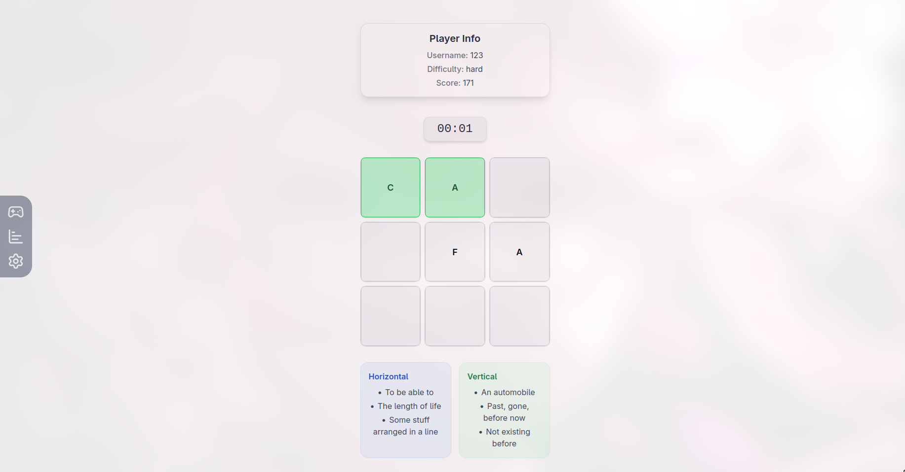

react-crossword
🧩 Crossword 3х3


An interactive crossword game built with React, TypeScript, Zustand, and Formik/Yup.
Track multiple players, difficulty levels, and scores with a responsive, modern UI.
⚙️ Requirements
- Node.js (^18.0.0)
- npm (^10.0.0)
🛠 Scripts & Configuration
npm start- start app on http://localhost:3000.npm run build- build project for production start.npm run typedoc- generate documentation for code.npm run storybook- start storybook
🌟 Features
- Multi-player support with
localStoragepersistence - Dynamic difficulty:
easy,medium,hard - Timer-based scoring system
- Horizontal & vertical crossword hints
- Portal modals for:
- Game Over
- Pre-Start
- Score Summary
- Settings page for username and difficulty
- Fully responsive UI
- Modern React Hooks + Zustand state management
📸 Demo

🚀 Getting Started
git clone https://github.com/Lordenko/react-crossword.git
cd react-crossword
npm install
npm run start
🗂 Project Structure
src/
├─ app/ # Main application logic or core files
├─ assets/ # Static files (images, fonts, potentially shared data)
├─ components/ # Reusable UI components
│ ├─ Game/ # Components specific to the Game Page
│ ├─ Layaout/ # Components for general page structure
│ ├─ Results/ # Components specific to displaying results or scores
│ └─ Settings/ # Components specific to the Settings Page
├─ hooks/ # Custom hooks for reusable logic
├─ pages/ # Application pages (screens)
├─ states/ # Global state management files (e.g., Zustand stores)
├─ types/ # TypeScript types and interfaces
🎮 Usage
Welcome to the game! Follow these steps to get started:
- Setup: Go to the Settings section and set your username and preferred difficulty level.
- Start the Game: Initiate the Game and begin filling in the crossword puzzle.
- Scoring: The Timer counts down. Be quick — faster solutions yield significantly higher scores!
- Game Over: When the game ends, the Game Over Portal will appear, showing your final score. From the portal, you will have options to:
- Retry the current level.
- Proceed to the next difficulty level.
🏆 Scoring
Your final score is calculated based on the difficulty multiplier and the time remaining when the puzzle is solved.
| Difficulty | Multiplier | Calculation |
|---|---|---|
| Easy | 1× | 1 × (Time Remaining) |
| Medium | 2× | 2 × (Time Remaining) |
| Hard | 3× | 3 × (Time Remaining) |
The score is dynamically updated as soon as the crossword is successfully solved.
🛠 Technologies
This project is built using the following core technologies:
- Frontend: React + TypeScript (for strong typing and component-based architecture)
- State Management: Zustand (lightweight and fast state management)
- Forms & Validation: Formik and Yup
- Styling: Tailwind CSS (utility-first CSS framework)
- Routing: React Router (for navigation)
🤝 Contributing
We welcome contributions! If you want to contribute, please follow these steps:
- Fork the repository.
- Create a new branch:
git checkout -b feature/your-feature - Commit your changes:
git commit -m 'feat: your message' - Push to your branch:
git push origin feature/your-feature - Open a Pull Request (PR).
👤 Author
- GitHub: @Lordenko
- Project Link: *Click me*